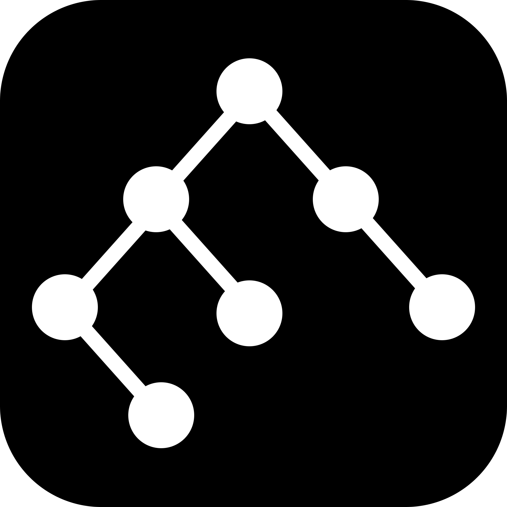

Loading mappings…
| Source | OpenSportTaxonomy decode | Target |
|---|

OpenSportTaxonomyThe sport vocabulary your app was missing.
Every fitness platform names sports differently. OpenSportTaxonomy is the common
language between them. Pick a source and a target
platform, and each of the source's sports is decoded to its OpenSportTaxonomy
equivalent, then encoded into the target:
source → decode → OST → encode → target.
Greyed values have no equivalent and fall back to generic.
Loading mappings…
| Source | OpenSportTaxonomy decode | Target |
|---|